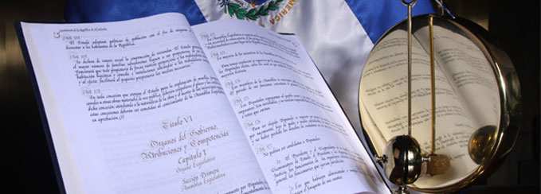
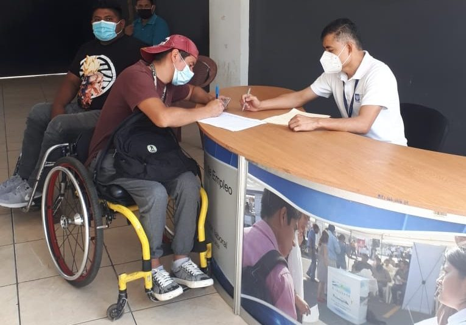
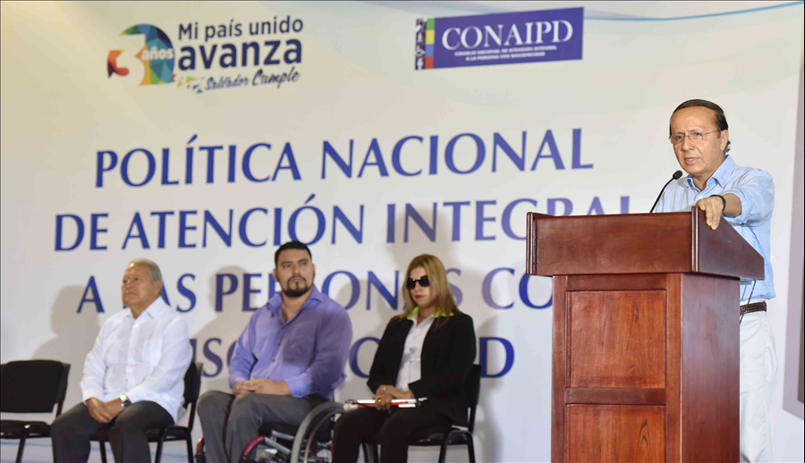

Marco legal interno de El Salvador en materia de derechos de las personas con discapacidad.
En El Salvador el marco interno en materia de derechos de las personas con discapacidad está compuesto primeramente por la Constitución de La República de El Salvador (1983) que es la ley fundamental que contiene los principios básicos de la legislación salvadoreña, así también por políticas enfocadas en la inclusión de las personas con cualquier tipo de limitación.
Las principales leyes y políticas enfocadas en la protección de los derechos de las personas con discapacidad son:
Constitución de la República Del Salvador (1983):
La Constitución de la República de El Salvador, es la normativa legal primordial, que nace de la necesidad de proteger y garantizar los derechos humanos y las libertades fundamentales frente al Estado, dándole primacía a la dignidad de toda persona, delante de las figuras encargadas de ejercer el poder político y judicial, en otras palabras, es aquella que, dentro del marco jurídico nacional, ocupa el primer lugar en la pirámide jerárquica normativa y por lo tanto, todos los tratados ratificados deben estar en comunión con ella y la legislación secundaria tendrá como base dicha herramienta legal.
La constitución tiene como uno de sus principales objetivos la inclusión, ya que busca proteger a las minorías, para que estén en igualdad de condiciones que las mayorías, en todos los ámbitos de la vida en sociedad, incluyendo a aquellas personas con limitaciones que se enfrentan a las barreras sociales como lo son las personas con discapacidad, esto se puede comprobar en el artículo 3, que reafirma la igualdad de toda persona ante la ley.
Ley de Equiparación de Oportunidades para las Personas con Discapacidad (2000)
La Ley de Equiparación de Oportunidades para las Personas con Discapacidad tiene por objetivo “establecer el régimen de equiparación de oportunidades para las personas con discapacidades físicas, mentales, psicológicas y sensoriales ya sea congénitas o adquiridas”, es decir, se garantizan los derechos tanto a las personas que nacen con alguna incapacidad de cualquier tipo, tanto como a las que la adquieren en el camino, como reza en su artículo número 1.
Política Nacional de Atención Integral a las Personas con Discapacidad (2014)
El objetivo de la política es garantizar el cumplimiento y goce pleno de los derechos de las personas con discapacidad en sus diferentes dimensiones individual, familiar y comunitaria, así como en las diferentes etapas de su ciclo de vida, que promuevan su desarrollo integral, bienestar y mejora de su calidad de vida mediante la articulación de acciones públicas y privadas orientadas a la eliminación gradual y efectiva de las barreras físicas y sociales.
